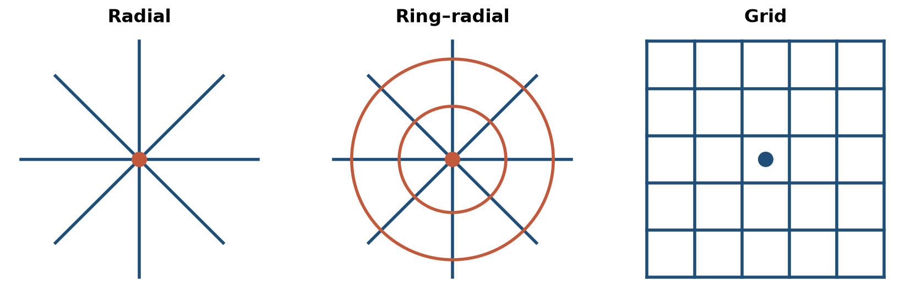
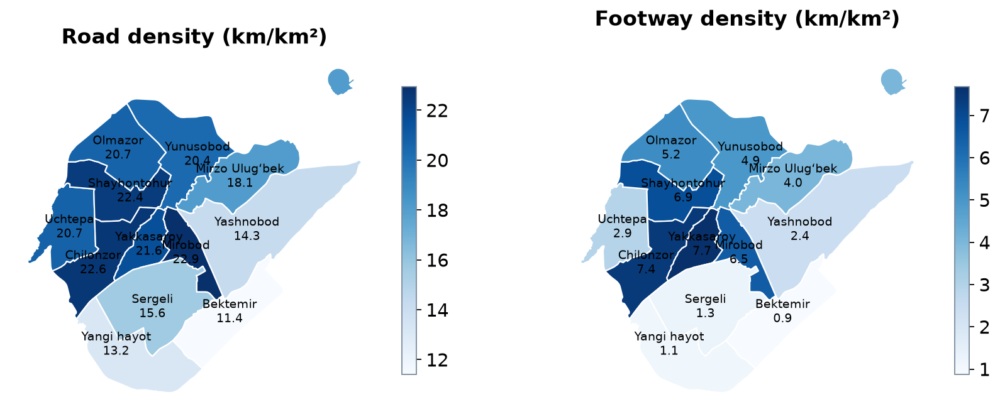
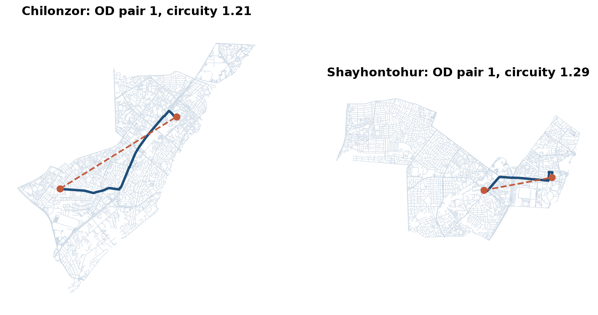

LEC7 · Urban Transport Systems Planning and Design · TSTU · Prof. J. Sodikov
1 / 23
What you will be able to do after today
Explain why urban networks are hierarchical and what each level is for
Compare radial, ring–radial and grid network forms
Measure a network by density, connectivity and directness
Read Tashkent's network data critically before designing on it
2 / 23
This lecture is about the structure of a city's street network. You will learn why networks have levels, from fast main roads to slow local streets, and what each level is for. You will compare three network forms and measure a network by its density, connectivity and directness. Finally, you will check what Tashkent's network data show and what they leave out, before you design on them.
Where this sits: the network-design perspective
The course's technical methods take four perspectives: network design, service design, infrastructure management, traffic operations
This week = network design: which links and nodes exist, and how they are ranked
Weeks 6, 9 and 10 take the other three perspectives on the same city
The design question: what network gives people access to destinations at acceptable speed and cost?
3 / 23
The course's technical backbone looks at a transport system from four perspectives: network design, service design, infrastructure management and traffic operations. This week takes the first one: which links and nodes exist, and how they are ranked. Weeks 6, 9 and 10 apply the other three perspectives to the same city. The central design question is which network lets people reach destinations at a speed and cost they can accept.
Why networks are hierarchical
Trips differ in length — long trips need speed, short trips need direct access
One network cannot do both: every access point slows through movement
Hierarchy separates functions: few fast links, many slow access links
Each level connects to the level above at a limited number of nodes
Van Nes (2002): the design variables are network density and speed per level
4 / 23
Long trips need speed, but short trips need direct access to the places along the street. One network cannot give both, because every access point slows down the traffic passing through. A hierarchy separates the two functions: a few fast links carry through movement, and many slower links give access. Each level joins the level above it at a limited number of nodes. Van Nes (2002) shows that the main design variables are the density and the speed of each level.
The figure shows the trade-off behind a hierarchy. Higher levels are faster, their links are spaced further apart, and they have fewer access points. Lower levels are slower, but they form a dense mesh with direct access. The same logic applies to public transport, from metro to bus to feeder lines, and to cycling, from main spines to local routes.
Functional classes of urban streets
Urban motorway / ring road: through movement, grade-separated access
Arterial: city-wide movement, public transport corridors, controlled junctions
Collector: links neighbourhoods to arterials, mixed movement and place
Local street: access and place — walking, play, deliveries
Movement and place are both functions; classify by both (GDCI)
Functional class should drive design standards and maintenance priority
6 / 23
Urban streets are grouped into functional classes by what they do. Urban motorways and ring roads carry through movement, arterials carry city-wide movement and public transport, collectors link neighbourhoods to arterials, and local streets serve access and place. The Global Street Design Guide asks you to classify streets by both movement and place, because a street is also where people walk, play and receive deliveries. The class should then set the design standards and the maintenance priority.
Worked example: link spacing and access distance
Grid with link spacing s: average perpendicular walk to the nearest link ≈ s / 4
s = 400 m → about 100 m of access walking
s = 1,600 m → about 400 m of access walking
Wider spacing: fewer junctions and higher speed, but longer access
Optimum spacing depends on trip length and the value of access time
7 / 23
Link spacing is the distance between parallel links in a grid. If trips start evenly across the area, the average walk to the nearest link is about a quarter of the spacing. So links 400 m apart mean about 100 m of access walking, and links 1,600 m apart mean about 400 m. Wider spacing gives fewer junctions and higher speed, but longer access, so the best spacing depends on trip length and on how much access time is worth. Week 6 uses the same reasoning for the spacing of bus stops.
Network forms: radial, ring–radial, grid

Schematic forms; real cities combine them.
8 / 23
These are three schematic network forms: radial, ring–radial and grid. A radial network has links that run out from the centre, a ring–radial network adds rings around the centre, and a grid has links in two directions. Real cities combine these forms. Tashkent is mainly ring–radial, with some pieces of grid.
Network forms compared
Form
Strength
Weakness
Tashkent example
Radial
Strong access to the centre
Centre congests; poor cross-town links
Avenues converging on the centre
Ring–radial
Cross-town trips avoid the centre
Rings attract traffic; long detours
Inner ring road and the outer ring road
Grid
Many route options; legible; resilient
Needs frequent service everywhere
Chilonzor microdistrict grid
9 / 23
Each network form makes some trips easy and others hard. A radial network, like Tashkent's avenues that converge on the centre, gives strong access to the centre, but the centre congests and cross-town links are poor. Rings, such as the inner and outer ring roads, let cross-town trips avoid the centre, but they attract traffic and can mean long detours. A grid, like the Chilonzor microdistricts, offers many route options and is easy to understand, but it needs frequent service everywhere.
Measuring a network: three families
Density: length of links per unit area (km/km²)
Connectivity: intersections per km², links per node, share of dead ends
Each measure answers a different design question — report all three
Measure per mode: the walking network differs from the car network
10 / 23
A network can be measured in three ways. Density is the length of links per square kilometre. Connectivity counts intersections per square kilometre, links per node and the share of dead ends. Directness is measured by circuity, which is the network distance divided by the straight-line distance. Each measure answers a different design question, so report all three, and measure each mode separately because the walking network is not the car network.
Circuity: how to read it
Circuity = 1.0 means the route is as direct as a straight line
Rivers, canals, rail lines and closed blocks push circuity up
A circuity of 1.5 turns a 600 m walk into 900 m
Pedestrians and cyclists feel circuity far more than drivers
Always state the sample: which origin–destination pairs, how chosen
11 / 23
A circuity of 1.0 means the route is as direct as a straight line, and higher values mean longer detours. Rivers, canals, rail lines and closed blocks force detours and push circuity up. With a circuity of 1.5, a 600 m straight-line distance becomes a 900 m walk, which matters much more to a pedestrian or cyclist than to a driver. Any circuity value should come with its sample: which origin–destination pairs were used and how they were chosen.
Tashkent: what the network data shows
OpenStreetMap extract, October 2026, and the students' field audits
12 / 23
The rest of the lecture turns to evidence from Tashkent. It uses an OpenStreetMap (OSM) extract from October 2026 and field audits made by students. OSM is an open map made by its contributors, so you need to check what it records and what it misses.
Road and footway density by district

All OSM road classes including service roads; footways = footway, path, pedestrian, steps.
13 / 23
The two maps show road density and footway density in each district, in kilometres of link per square kilometre. Road density counts all OSM road classes, including service roads. Footway density counts mapped footways, paths, pedestrian streets and steps. Compare the dense central districts with outer districts such as Sergeli and Bektemir.
Reading the density maps
Study area (twelve districts): 437.7 km², 7,686.9 km of mapped road
City road density 17.6 km/km²; Chilonzor 22.6 km/km²
Footways: 7.7 km/km² in Yakkasaroy vs 0.87 km/km² in Bektemir
Ergashova (2026) found 7.35 km/km² and 0.85 km/km² — same pattern, earlier extract
Density is not quality: service roads inflate it, unmapped footways hide links
14 / 23
The study area of twelve districts covers 437.7 km². Road density for the study area is 17.6 km/km², and Chilonzor reaches 22.6 km/km². Footway density falls from 7.7 km/km² in Yakkasaroy to 0.87 km/km² in Bektemir, and Ergashova (2026) found nearly the same values, 7.35 and 0.85, from an earlier extract. Two analyses at two dates give the same pattern, which makes the result more reliable. But density is not quality: service roads inflate it, and footways missing from the map hide real links.
Circuity in practice: Chilonzor and Shayhontohur

Dashed = straight line; navy = shortest road path. LAB4 repeats this for ten pairs per district.
15 / 23
The map compares one origin–destination pair in Chilonzor and one in Shayhontohur. The dashed line is the straight line between the two points, and the navy line is the shortest path along the roads. Circuity is the length of the navy path divided by the length of the dashed line. In LAB4 you repeat this for ten pairs in each district.
A surprising result
Mean road circuity (ten random pairs): Chilonzor 1.37, Shayhontohur 1.32
The planned microdistrict grid is not more direct: large blocks, few through streets
The old city's dense lanes give short detours — but they are narrow and slow
Small sample: LAB4 asks you to test how stable the difference is
16 / 23
Over ten random pairs, mean road circuity is 1.37 in Chilonzor and 1.32 in Shayhontohur. So the planned microdistrict grid is not more direct than the old city, because its blocks are large and it has few through streets. The old city's dense lanes give short detours, but the lanes are narrow and slow. Ten pairs is a small sample, so LAB4 asks you to test how stable the difference is. The lesson is to measure a network rather than assume how it performs.
From inventory to function: Tashkent's streets
OSM tags (primary, secondary, residential) are not the national design categories
A GIS inventory links each street to its class, condition and equipment
Earlier TSTU work: GIS inventory of Tashkent's traffic signals
Shortest-path tools in QGIS (Road Graph / Network Analysis) support route checks
Your corridor: record both the OSM class and the official class
17 / 23
OSM tags such as primary, secondary and residential are not the same as the national design categories. A GIS inventory links each street to its official class, its condition and its equipment, as earlier TSTU work did for Tashkent's traffic signals. Shortest-path tools in QGIS can then check routes on the network, and LAB4 uses this method. For your corridor, record both the OSM class and the official class.
Connecting to the external road network
Through traffic and freight should meet the city on the ring roads, not on local streets
Entry corridors carry intercity, commuter and freight flows together
The M-41 corridor study shows how mixed flows create safety problems at the edge
Design question: where do external links enter the hierarchy, and at which level?
18 / 23
Through traffic and freight should meet the city on the ring roads, not on local streets. Entry corridors carry intercity, commuter and freight flows together. The study of the M-41 corridor shows how this mix of flows creates safety problems at the edge of the city. So a design must decide where each external link enters the hierarchy, and at which level.
Discussion
Which district would you redesign first — and which measure (density, connectivity or directness) would justify it?
Two minutes in pairs, then three answers to the class.
19 / 23
This question asks you to turn today's measures into a design choice. Pick a district, name the measure that shows its problem (density, connectivity or directness), and say which value you would like to change. A good answer links a measured weakness to a specific redesign.
Key takeaways
Hierarchy trades access against speed; design both ends deliberately
Network form shapes which trips are easy and which are hard
Report density, connectivity and directness — per mode, with the sample stated
Tashkent's data is good enough to measure, but check what it leaves out
20 / 23
A hierarchy trades access against speed, so design both the fast and the slow levels on purpose. The form of a network decides which trips are easy and which are hard. Report density, connectivity and directness for each mode, and state the sample you used. Tashkent's open data are good enough to measure the network, but check what they leave out.
Before LAB4 and P4
Open LAB04_network.gpkg in QGIS and check that the project CRS is EPSG:32642
Read van Nes (2002) chapter 2 on network levels
Bring a printout or screenshot of your project corridor and its surroundings
21 / 23
Before the lab, open LAB04_network.gpkg in QGIS and check that the project uses EPSG:32642, the coordinate system of all lab layers. Read chapter 2 of van Nes (2002) on network levels. Bring a printout or screenshot of your project corridor and its surroundings. Your work this week feeds Stage 2 of the course project, due in Week 6.
References
TU Delft, Department of Transport & Planning. CIEM6250 Transport Systems Design — units B-1 Network Design, B-2 Service Design, B-3 Physical Infrastructure Management, B-4 Traffic Operations Management (Smart Public Transport Lab education page; MSc Civil Engineering TTE track). https://www.tudelft.nl/citg/over-faculteit/afdelingen/transport-planning/research/labs/smart-public-transport-lab/education
van Nes, R. (2002). Design of Multimodal Transport Networks: A Hierarchical Approach (PhD thesis, TRAIL T2002/5). Delft University of Technology. https://research.tudelft.nl/en/publications/design-of-multimodal-transport-networks-a-hierarchical-approach
Global Designing Cities Initiative & NACTO (2016). Global Street Design Guide. Island Press. https://globaldesigningcities.org/publication/global-street-design-guide/
Sodikov, J. I. (2017). The role of highway functional classification in road asset management. Advances in Transportation Studies.
Wilson, N., Sánchez-Martínez, G., & Nassir, N. (2017). 1.258J/11.541J Public Transportation Systems, Spring 2017. MIT OpenCourseWare. https://ocw.mit.edu/courses/1-258j-public-transportation-systems-spring-2017/
TU Delft (2013). CIE4801 Transportation and Spatial Modelling. TU Delft OpenCourseWare. https://ocw.tudelft.nl/courses/transportation-and-spatial-modelling/
Ergashova, M. Z. (2026). 15-minute walkability of Tashkent mahallas — dissertation defence presentation, 14 Oct 2026 (in Uzbek). Tashkent State Transport University.
Sodikov, J. I., et al. (2016). GIS inventory of traffic signals on Tashkent streets (in Russian). Transport Systems of Siberia.
Sodikov, J. I. (2022). Determining the shortest path between two features with QGIS using the Road Graph module. Molodyi vchenyi.
Sodikov, J. I., et al. (2026). Traffic pattern and safety evaluation on the M-41 corridor using mixed-methods analysis. AIP Conference Proceedings (2025 Int. Conf.).